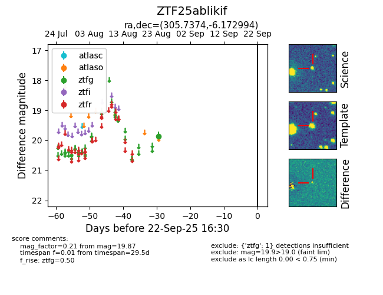

FINK: ZTF25ablikif
Lasair: ZTF25ablikif
ALeRCE: ZTF25ablikif
ZTF25ablikif (ztf,fink)
equatorial (ra, dec) = (305.7374,-6.17299)
galactic (l, b) = (37.9570,-23.14288)

last ztfg=19.87
1 ztfg detections